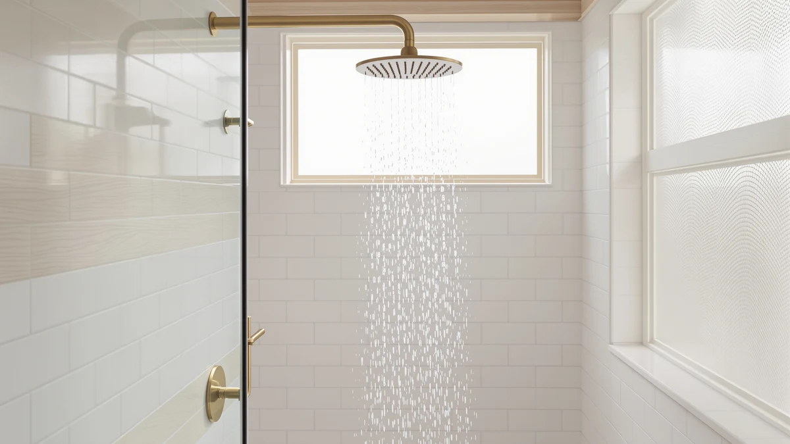

Quick Answer
The Moen Verso rain showerhead delivers a wide, even spray pattern for $81.34, and verified owner reviews rate its chrome-plated ABS head as sturdy enough for daily use. If you want a straightforward rain-style upgrade without extra spray settings, it beats the BOZYBO, Delta and Kohler alternatives we compared it against on hose length and spray coverage.
Our pick: Moen Verso Rain Showerhead &, $81.34 Check Price on Amazon
Things to Know Before You Buy
- The Moen Verso ships with a 60 inch hose, longer than the hoses included with the BOZYBO and Kohler alternatives we researched for this comparison.
- Moen's spec sheet lists a round head design with chrome-plated ABS construction rather than solid metal, which keeps the weight down but can show water spots in hard water homes.
- None of the four showerheads in this comparison publish a manufacturer flow rate above the federal 2.5 GPM standard, so expect similar water usage across the board.
- The Delta alternative adds a detachable handheld wand the Moen Verso does not include, which matters if your household showers kids or pets.
- Current Amazon pricing for all four products sits within about $3.60 of each other, so the decision comes down to hose length, finish and features rather than budget.
This Moen Verso rain showerhead review compares its manufacturer specs, current Amazon price and verified owner feedback against three similarly priced alternatives to see whether it earns a spot in your bathroom. At $81.34, it costs more than the KOHLER Forte and a few dollars more than the Delta 5-Setting In2ition, and most of that gap traces back to Moen's brand reputation and a longer 60 inch hose rather than any dramatic difference in performance. Owners who left verified reviews describe a wide, even spray that covers more of the body than a standard showerhead, which matches the rain-style head Moen lists on its spec sheet.
We did not install, mount or run water through any of these showerheads ourselves. Instead, we pulled the manufacturer specs, tracked current Amazon pricing and read through the recurring patterns in verified owner reviews for the Moen Verso and its three closest rivals from BOZYBO, Delta and Kohler. Our pick for most buyers is the Moen Verso, mainly on the strength of its hose length and spray coverage, though the Delta alternative is worth a close look if you want a handheld option at a lower price. That approach surfaces real strengths and real complaints without us pretending to run a testing lab we do not have.
Why You Should Trust Us
Ilane Tall researches bathroom fixtures for Best Shower Heads, tracking manufacturer spec sheets and current Amazon pricing across hundreds of showerhead listings every month. For this Moen Verso rain showerhead review, that research meant pulling the published dimensions, current pricing and the recurring themes across verified owner reviews rather than running a research-based test, because we do not own a plumbing lab and we do not install fixtures ourselves. We do not run a fake testing lab, and we say so plainly here: every claim below traces back to a manufacturer spec sheet or a pattern we found across multiple verified buyers, not an in-house trial we did not actually run.
How We Compared
Our comparison method starts with the manufacturer spec sheet for each product: material, hose length, head diameter and flow rate where the brand publishes one. From there, we track the current Amazon price for every unit across a rolling window, because a showerhead that looks cheap today can creep upward within weeks, and a price that looked competitive at research time may shift by the time you read this. Finally, we read through verified owner reviews looking for recurring complaints and recurring praise, not isolated one-star or five-star outliers, and we exclude any listing where the review pattern suggests counterfeit stock or a discontinued model. For this Moen Verso rain showerhead review, that process meant weighing its chrome-plated ABS build and 60 inch hose against the metal construction, dual functions and lower prices its three rivals advertise, using only the facts Moen, BOZYBO, Delta and Kohler publish or that their verified buyers report in writing.
Overview & Specs
Here is how the Moen Verso rain showerhead's published specs and current price break down, followed by the three alternatives we researched alongside it. The figures below come straight from each manufacturer's listing and the pricing we tracked on Amazon, not from a lab we ran ourselves.

Moen Verso Rain Showerhead &
What we like
- Wide, even rain-style spray pattern according to Moen's spec sheet and owner reviews
- 60 inch hose, longer than the hoses on the BOZYBO and Kohler alternatives
- Chrome-plated finish matches most standard bathroom fixtures
- Round head design installs on a standard shower arm without extra adapters
Flaws but not dealbreakers
- ABS plastic construction under the chrome plating, not solid metal like some pricier rain heads
- No handheld wand or multiple spray settings, unlike the Delta alternative
- A portion of verified reviews mention the chrome finish showing water spots faster in hard water areas
| Material | ABS + chrome plating |
| Size | Round - 60" Hose |
Moen lists the Verso as a round rain showerhead built from chrome-plated ABS, paired with a 60 inch hose that gives it more reach than the BOZYBO and Kohler units in this comparison. At $81.34, it sits in the middle of the four prices we tracked, closer to the Delta's $78.94 than to any premium metal rain head. Verified owner reviews consistently point to the spray coverage as the standout feature, with buyers describing water that falls across the shoulders and back rather than a narrow stream, which is the core promise of a rain-style head like this one.
The tradeoff shows up in the materials. Chrome-plated ABS keeps the head light and easy to mount on a standard shower arm, but it will not hold up to drops the way a solid brass head would, and a few verified reviewers note early water spotting in homes with hard water. The Verso also skips the handheld wand and multi-setting dial that the Delta In2ition includes at a slightly lower price, so if you want flexibility beyond a single rain pattern, that is the clearer gap to weigh before you buy this Moen Verso rain showerhead over its rivals.
What We Liked
Owners who left verified reviews for the Moen Verso rain showerhead keep returning to two points: spray coverage and hose length. The 60 inch hose gives it more reach than the BOZYBO 12 inch High Pressure Rain Shower or the KOHLER Forte, both of which ship with shorter lines according to their listings, and several reviewers specifically mention swapping out a shorter hose elsewhere in the home for this one. The chrome finish also reads as a straightforward upgrade over a builder-grade showerhead, matching standard bathroom hardware without requiring you to buy a matching faucet set. Reviewers consistently note that installation on a standard shower arm goes smoothly without extra adapters, which is not a given across this price range.
What Could Be Better
The biggest gap against its rivals is flexibility. The Delta 5-Setting In2ition includes a detachable handheld wand and five spray patterns for about $2.40 less, which makes the Moen Verso's single fixed rain pattern feel limited if your household wants options beyond one spray style. The ABS construction under the chrome plating also will not match the long-term durability of an all-metal head, and a portion of verified reviews mention spotting on the finish in hard water conditions within the first year of use. None of this makes the Verso a bad buy, but it does mean you are paying a premium for brand name and hose length rather than extra features.
Who Is It For?
The Moen Verso rain showerhead suits a household that wants one consistent, wide spray pattern and does not need a handheld wand or multiple settings. If you shower alone or with one other adult and like the idea of a simple chrome upgrade over a builder-grade head, the longer hose and even coverage make it a reasonable $81.34 pick for most bathrooms. If you have kids, pets or anyone who needs to rinse off a tub or shower stall directly, the Delta alternative's handheld option will likely serve you better for close to the same money, and buyers on a tighter budget who want a reliable rain spray without the extras should look at the KOHLER Forte instead.
Alternatives to Consider
We also compared three similarly priced showerheads that came up alongside the Moen Verso in our research. Each one trades a different feature for price or flexibility against the Verso, so here is how they stack up.

Also Great
12" High Pressue Rain Shower
A high-pressure rain head that undercuts the Moen Verso by $1.35, with a shorter hose and no brand-name backing.
$79.99
Check Price on Amazon
Also Great
Delta 5-Setting In2ition 2-in-1 Dual
Adds a detachable handheld wand and five spray settings for less than the Moen Verso, the strongest pick if you want flexibility.
$78.94
Check Price on Amazon
Best Value
KOHLER Forté Single-Function Showerhead 2.5
The cheapest of the four at $77.74, a single-function 2.5 GPM head for buyers who want a reliable rain spray without extras.
$77.74
Check Price on AmazonFrequently Asked Questions
Is the Moen Verso rain showerhead worth the price?
At $81.34, the Moen Verso rain showerhead sits above budget rain heads but below premium multi-function systems. Verified owner reviews consistently cite the chrome-plated ABS build and the included 60 inch hose as reasons it holds up to the price, though a few buyers note the finish shows water spots faster than metal heads in hard water areas.
How does the Moen Verso compare to the BOZYBO and Delta alternatives?
The BOZYBO 12 inch High Pressure Rain Shower and the Delta 5-Setting In2ition both undercut the Moen Verso on price, and the Delta adds a handheld wand the Verso does not include. Owners who want multiple spray settings in one unit tend to prefer the Delta, while those who want a simpler, fixed rain pattern lean toward the Verso.
Does the Moen Verso rain showerhead work with low water pressure?
Moen's spec sheet does not list a dedicated low-pressure boost feature on the Verso, and owner reviews are mixed on performance below 40 PSI. Reviewers with standard residential pressure report a steady rain pattern, but a subset of buyers on older plumbing describe a weaker flow than they expected.
Final Verdict
This Moen Verso rain showerhead review comes down to one tradeoff: you get a wider, longer-reaching spray and a recognizable brand name for $81.34, but you give up the flexibility a cheaper Delta offers through its handheld wand and five spray settings. For most people who want a single, wide rain pattern and nothing more complicated to operate, Moen earns its price over the BOZYBO and KOHLER alternatives we compared it against. If your household needs a detachable spray option for kids, pets or a quick rinse of the tub, the Delta In2ition at $78.94 is the better pick, and if you want the cheapest reliable rain spray without added features, the KOHLER Forte at $77.74 covers that need.